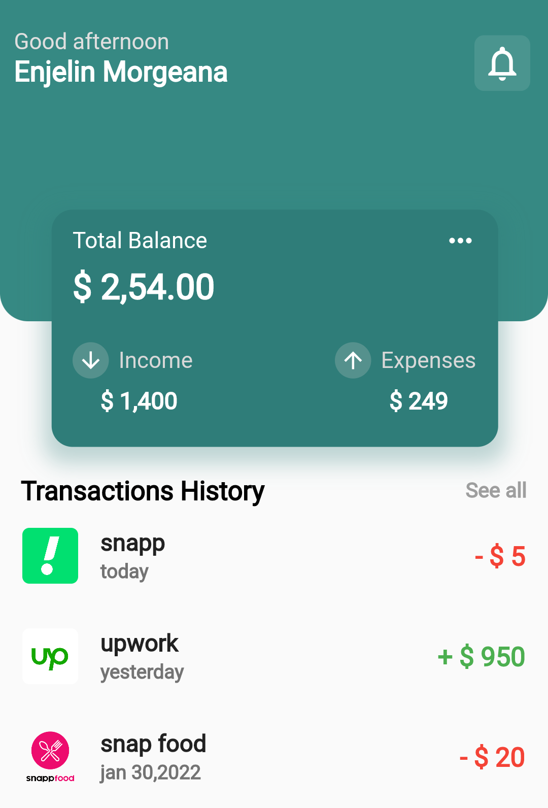
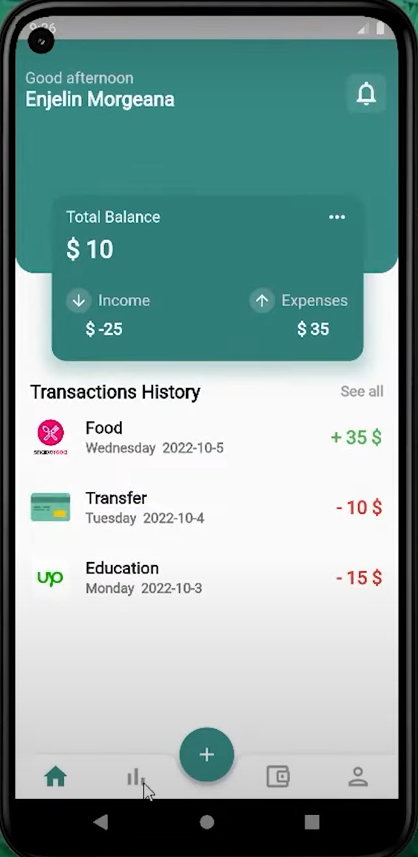
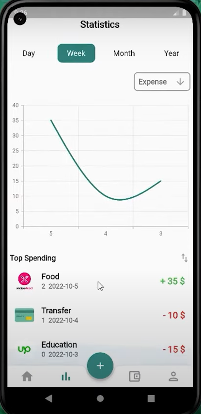

Digital Finance Management App: Control Your Expenses Smartly
Project Overview
In our daily lives, we often spend money without giving much thought to tracking every expense. As days go by, these untracked expenses accumulate, leaving us wondering where our hard-earned money went. To tackle this problem, we developed the Digital Finance Management App — a simple yet powerful tool designed to help users monitor and control their spending habits effectively.
The app not only records your daily financial activities but also provides a visual representation of your expenses, making it easier to analyze spending patterns. With just a few taps, users can log their income and expenses, ensuring better financial management and awareness.

Key Features
- Expense Tracking: Easily log daily expenses and income to keep track of your finances.
- Graphical Representation: Visualize your spending habits with intuitive graphs, helping you understand where your money goes.
- Insightful Analytics: Identify unnecessary expenses and make informed decisions to control your spending.
- User-Friendly Interface: Simple and clean design that ensures a hassle-free experience for users of all ages.
Technology Used


Real-World Applications & Potential Impact
The Digital Finance Management App has the potential to make a significant impact on people's daily financial habits. Whether you're a student managing pocket money, a working professional handling monthly budgets, or a family tracking household expenses, this app can help you take control of your financial health. The graphical insights empower users to make smarter choices, avoid unnecessary expenditures, and save more effectively.



Conclusion
The Digital Finance Management App is more than just an expense tracker — it’s a personal finance assistant aimed at cultivating better spending habits. By providing a clear and visual overview of your financial activities, the app helps users make smarter choices, reduce unnecessary expenses, and ultimately gain control over their financial lives.